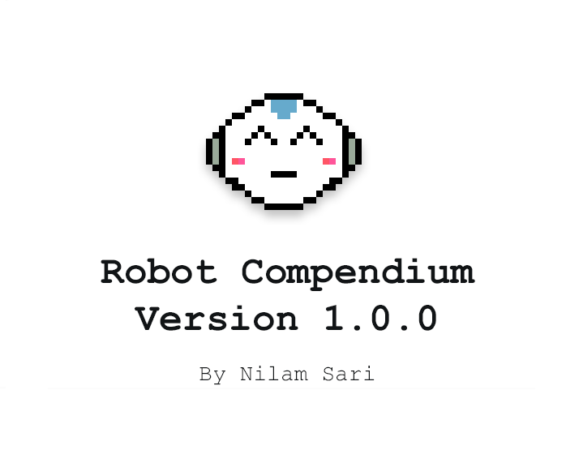
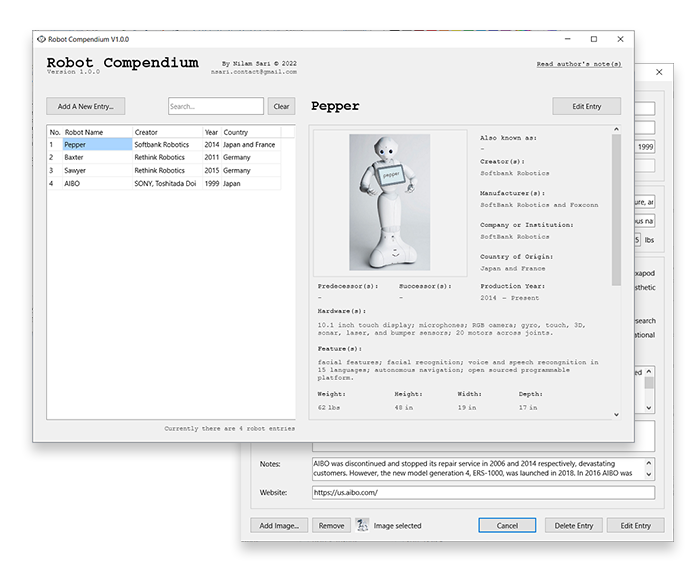
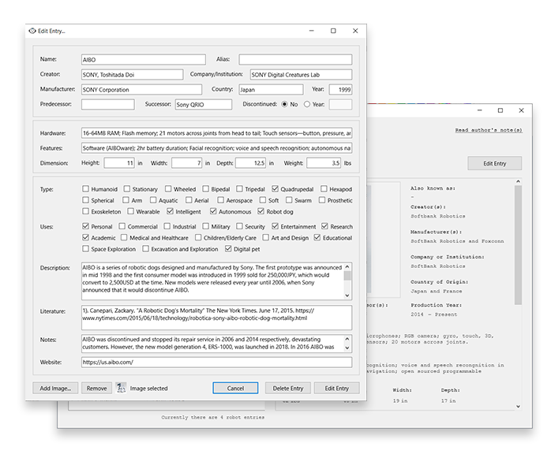
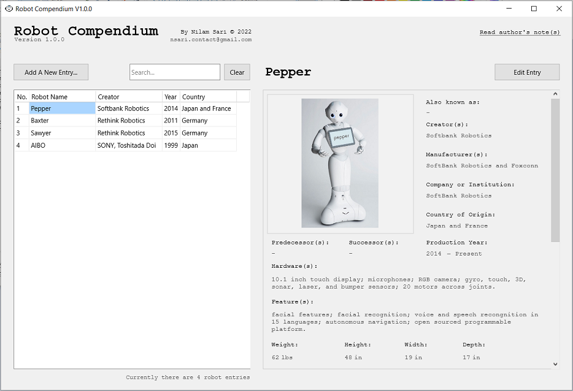
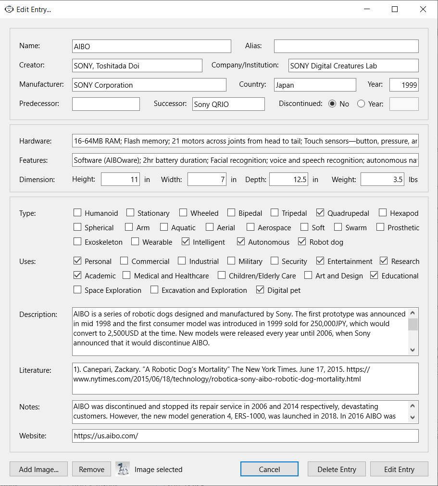
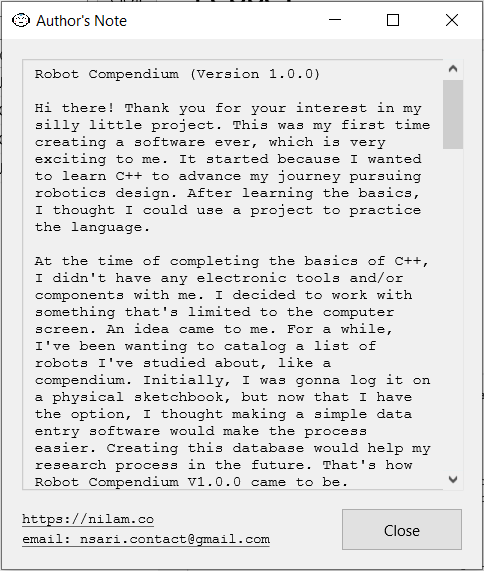

Robot Compendium is a simple data entry software to log list of robots I am studying. The software was built with C++.
This project started because I wanted to use my six weeks at Cove Park residency to learn C++, as it is the most common language used in robotics. At the time of completing the basics of the language, I wanted to work on a simple project to practice the language. However, I didn't bring any tools or electronics with me to the residency. I decided to work on something that is limited to the computer screen.
I've always had this idea at the back of my mind to start cataloging the robots I'm studying so I could use it as a tool to make my research process easier. What I had in mind was to do that manually in sketchbooks. I toyed around with the idea of using html and php as well to make the logs easier to filter through. When I was searching for ideas for a simple project to practice C++, I found that making a data entry software is a good beginner's project to work on. Then I thought, "oh, this would be a perfect medium to catalog robots!"
 When I first brought up this project to a friend, who is also a robot enthusiast, they asked me a fundamental question to the premise of the project, "what constitutes as a robot?" A question I often think about in my work. It's an ubiquitous question in the robotics field. I personally think it's not a question for humans to answer, yet I also acknowledge that robotics technology is too young for robots themselves to answer. Therefore, for the purpose of this project, I will be borrowing my belief in what constitutes as art—whatever the creator considers as one, with additional parameters that it is also a machine that can be programmed to run autonomously.
The data stored in each entry consists of: the robot's name, alias or nickname, creator, company or institution, manufacturer, country of origin, year it was created, year it was discontinued, predecessor, successor, hardware specifications, features, dimensions in inches, weight in pounds, type, uses, description, literatures it's cited in, notes, website url, and image. More might be added as needed.
Closer look at the forms:
 Currently the 1.0.0 version is offline and only available to myself. My plan is to keep working on the software development and expanding its data so that I could publish it for others to use. My next step is to find a way to host the database online, develop the software for other operating system—like mac OS, iphone iOS, and android—for accessibility, and make it an opensource database so that people could request submit entries of their own.
I would love to keep expanding this project, as I will be using this tool for a long time.
Here is the excerpt from the Author's Note:
"Robot Compendium (Version 1.0.0)
Hi there! Thank you for your interest in my silly little project. This was my first time creating a software ever, which is very exciting to me. It started because I wanted to learn C++ to advance my journey pursuing robotics design. After learning the basics, I thought I could use a project to practice the language.
At the time of completing the basics of C++, I didn't have any electronic tools and/or components with me. I decided to work with something that's limited to the computer screen. An idea came to me. For a while, I've been wanting to catalog a list of robots I've studied about, like a compendium. Initially, I was gonna log it on a physical sketchbook, but now that I have the option, I thought making a simple data entry software would make the process easier. Creating this database would help my research process in the future. That's how Robot Compendium V1.0.0 came to be.
When I first brought up this project to a friend, who is also a robot enthusiast, they asked me a fundamental question to the premise of the project, "what constitutes as a robot?" A question I often think about in my work. It's an ubiquitous question in the robotics field. I personally think it's not a question for humans to answer, yet I also acknowledge that robotics technology is too young for robots themselves to answer. Therefore, for the purpose of this project, I will be borrowing my belief in what constitutes as art — whatever the creator considers as one, with additional parameters that it is also a machine that can be programmed to run autonomously. For example, I wouldn't consider a Tesla self-driving car a robot in this project despite its level of autonomy, because the company markets it as a car and not a robot. My friend also asked me if I will be including fictional robots in this compendium. Honestly, I would love to. Sci-fi robots are infleuntial to my work. However, it'd make the scope of this project bigger than what I could chew at this moment. Maybe someday in the future.
Robots aside, I would like to thank Cove Park for giving me a six week long funded residency in Scotland, which allowed me to start learning C++ and make this Robot Compendium happen. I feel very lucky to have the opportunity to work in such beautiful space and meet many amazing, lovely, and talented people. I would also like to thank educational channels on YouTube that helped me learn and troubleshoot on C++ Builder such as CodeBeauty, DJ Oamen, and VCL Examples.
To be honest, I'm still quite unsure how to apply what I've learned so far into robotics. I don't have a computer science background, most of my coding and electronic skills are self-taught. I started with HTML, CSS, and a little bit of javascript. At first I learned them so I could make my blogs look cooler throughout middle and high school. I forgot about most of it as I pivoted my practice to woodworking.
However, my love for robots kept creeping back to me. Before I realized it, I kept making robots out of wood. It was reminiscent of my childhood attempts of making robots with only paper and imagination at my disposal, over and over again, because at the end of the day, even my wildest imagination couldn't make them move. It was around the time I got into the world of digital fabrication in undergrad that I was introduced to Arduino microcontrollers. With the mechanical parts digitally designed and fabricated, as well as electronic parts moving according to the code through microcontrollers, My wooden sculptures came to life. In that moment, they were starting to look like the robots I dreamed of.
From there, through trial and error, I persisted on learning more of electronics and programming. The amount of LEDs, motors, and other electronic parts I fried or ordered online without ever figuring out how to work them was embarrassingly astronomical. From Arduino, I felt familiar enough to jump into Processing and p5.js library, but it got overwhelming very quickly. The amount of different programming languages and libraries out there that I needed to learn felt daunting.
I reached a point where I thought that maybe I was just not meant to do any of this. That I was just an artist. Who was I to play computer scientist? I thought of giving up. Then, at some point, I got back into HTML, CSS, and Javascript in grad school. I wanted to self-publish a research project and create a little online space for it without having to pay money for a webservice or a server space. Surprisingly, I managed to learn enough and make a proper website from scratch. I felt encouraged to pursue programming again.
Fast forward, I'm here learning C++ at Cove Park art residency. I'm proud to share this Robot Compendium. I still need to figure out how to host the database online, so that I can share this project as an open-sourced program. The compendium logs will be updated periodically as I go. It's the kind of research I want to do for a long time. Perhaps, for the rest of my life, even. If you want to learn more about what I talk about in my work and research you can visit my website link below. Thank you for reading all this!
Love,
Nilam"